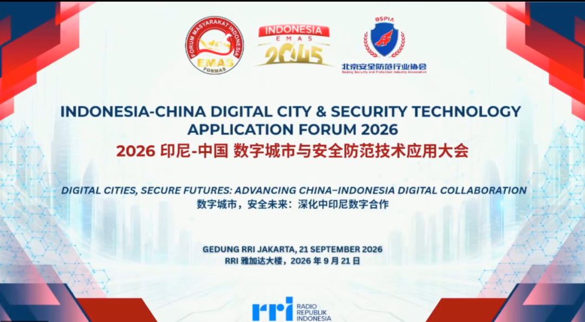
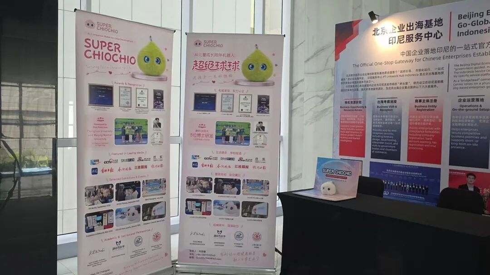

9月21日，2026印尼—中国数字城市与安全防范技术应用大会在印度尼西亚共和国广播电台雅加达总部大楼隆重举行。大会以"数字城市，安全未来：深化中印尼数字合作"为主题，由黄金印尼社会论坛（FORMAS）、北京安全防范行业协会（北安协）等联合主办，印尼政府通信局、国家反恐局、国家灾害管理局等多家政府机构鼎力支持，汇聚两国政府机构、行业组织、科研专家及优质企业代表。印尼国家电视台对大会盛况进行报道，二十多家印尼当地自媒体平台同步传播，是中印尼数字经济与安全防范领域深化务实合作的标杆性盛会。

作为本次大会展示区的亮点之一，超级球球在大会现场精彩亮相，集中展示了品牌在相关领域的核心成果，吸引了众多中印尼政企嘉宾、行业专家驻足参观、交流洽谈。
展会现场，众多嘉宾在超级球球展台前驻足，与超级球球团队深入交流，详细询问技术细节、应用场景与落地模式，对超级球球的产品能力与创新体验给予积极评价。不少印尼本地企业与机构代表表达了进一步了解与合作的意向。

会议期间，北京数字经济企业出海创新服务基地印尼服务站揭牌，大会同步签署智慧交通、企业出海服务、产业园区共建等多项合作备忘录。球球团队借此机会，与印尼政府、本地行业组织及出海企业现场交流，调研当地公共安全、应急管理、城市治理、数字人才等领域政策与需求，为深耕印尼市场、推进本土化合作积累一手信息与资源。
此次亮相雅加达，是球球出海东南亚、拥抱更广阔国际市场的重要一步。本次亮相是球球海外布局中的又一次务实落点，球球将继续参与中印尼数字安全领域的务实合作，稳步推进东南亚市场开拓。
出海正当时，球球，一直在路上！